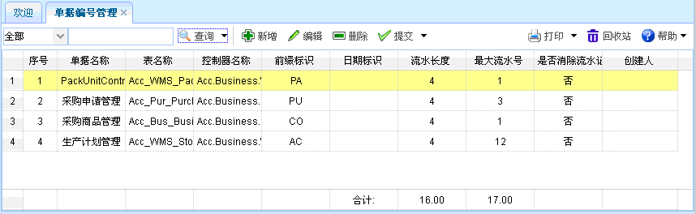
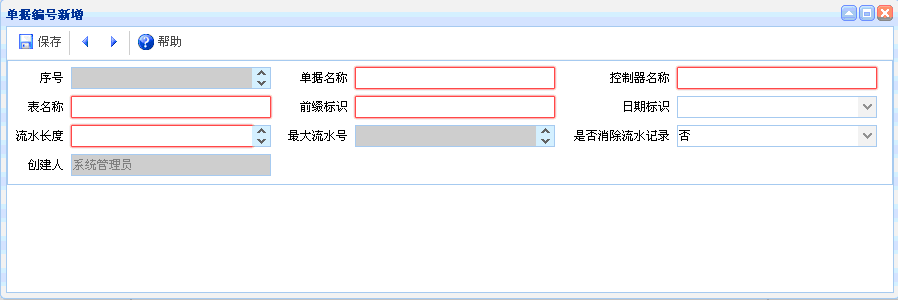
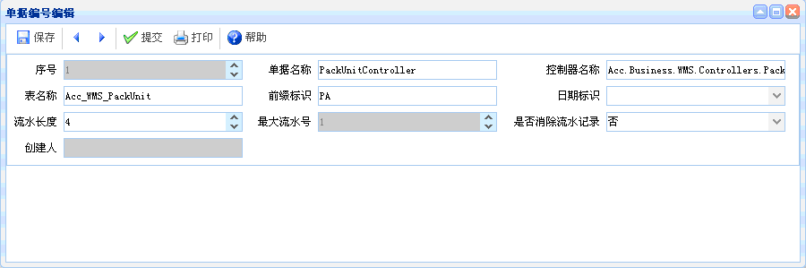

单据编号管理
单据编号管理
概述：
功能介绍：点击【单据编号管理】，进入单据编号管理页面，如下图所示。功能包括：查询、新增、编辑、删除、提交。

图表1-sj8-1【单据编号管理】
图表1-sj8-1【单据编号管理】
【查询】：通过设置查询条件，直接点击查询按钮即可列出相关的单据编号管理信息。
【新增】：点击新增按钮，如下图所示。新增完毕点击保存。新增时红色文本框为必填项，灰色文本框为默认。

图表1-sj8-2【单据编号新增】
图表1-sj8-2【单据编号新增】
【编辑】：选择一个单据编号信息，点击编辑按钮后，出现如下图所示内容。进行编辑、提交操作。编辑时，灰色文本框为默认。

图表1-sj8-3【单据编号编辑】
图表1-sj8-3【单据编号编辑】
【删除】选择一个单据编号信息后，点击删除，即可删除其相关信息，已提交的信息不能删除。
【提交】选择一个单据编号信息后，点击提交，已提交的单据不能再次提交。
 注意事项
注意事项
1、提交后的信息不能再次进行编辑。如果需要进行修改，则由提交人撤消提交后才能再次进行编辑。
 常见问题
常见问题
1、？
2、？
3、？